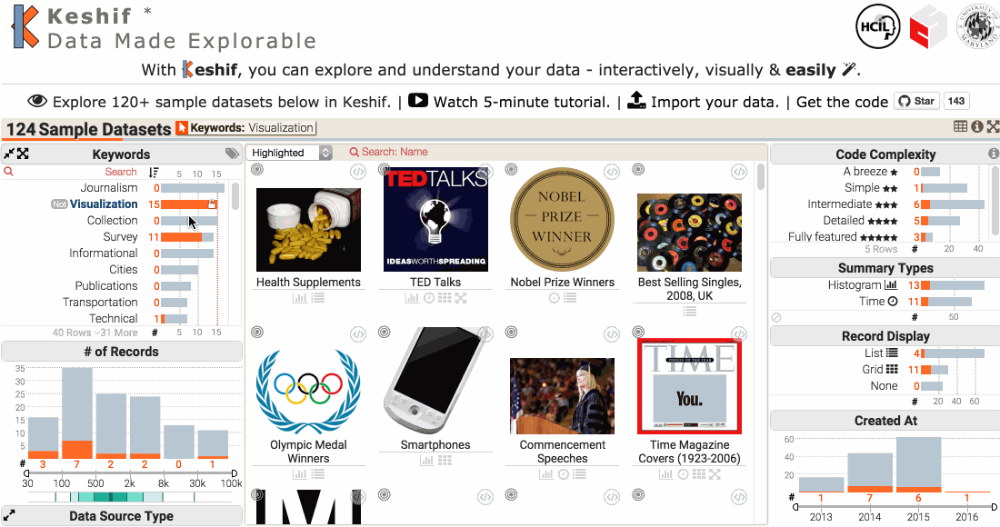

ve
Veri Gazeteciği M. Adil Yalçın
İzmir Yerel Medya ve Sivil Toplum İçin Veri Gazeteciliği Atölyesi
20 Şubat, 2016

20 Şubat, 2016
Merhaba!
www.keshif.me 
İçerik üzerine:
- Kolay erişilebilir değil
- Güvenilir değil, kaynaklar belirsiz
- Eksik (ve eksiklikler belirsiz)
- Farklı organizasyonlar, farklı veri
- Karşılaştırma zor
- Yasal/toplumsal bağlam ne?
- Yönetmelikler, uygulamalar
zamanla nasıl değişti?
Örnek: Öldürülen Gazeteciler
keshif.me/demo/OldurulenGazeteciler
Kaynak veri - Çağdaş Gazeteciler Der.
Keshif web kodu
Türkce dil destegi (deneysel)
Keshif web kodu
Türkce dil destegi (deneysel)
kshf.lang.cur = kshf.lang.tr;
Yeni Data Keşfi:
keshif.me/demo/YourData
Data kaynağı
- Google Sheet URL
(Kolay kaynak paylasimi ve isbirligi) - Sheet Name (Tablo ismi)
- En az ~50 satır veri
Amaçlar
- Önemli, uygun sonuçlara odaklanmak (keşif -> bilgi)
- Halkın/okuyucunun efektif şekilde doğru bilgilenmesi
- Cok-yonlu grup calismalari:
Teknik, sosyal, iletisim, arastirma, hukuk, sivil toplum, ...
İletişim
yalcinumdedu
adilyalcin.me